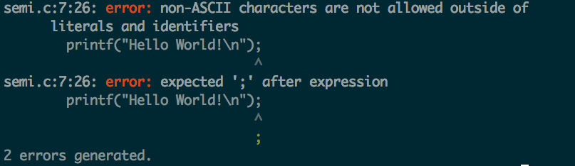
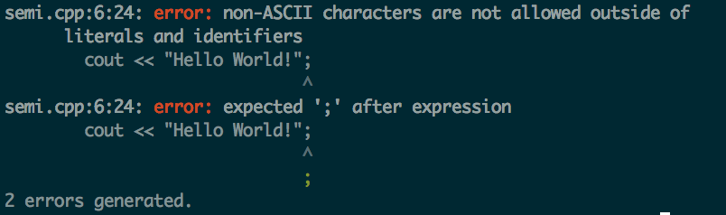
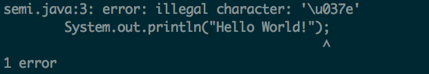
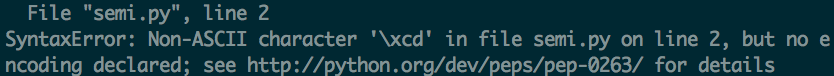
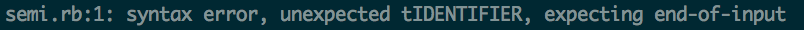

Testing error messages with the Greek Question mark
The Greek Question Mark ; or Hex: & #x37e;
In my testing of various languages I found that replacing a semi-colon with a Greek question mark resulted in a failure to compile.(Not a big surprise.) However, different compilers and interpreters had different error messages as to what was causing the issue.
My findings: Sorted by Language
C:
#include <stdio.h>
#include <stdlib.h>
int main()
{
printf("Hello World!\n");
printf("Hello World!\n");
}
Obviously one of these has a Greek Question-Mark, but how does GCC interpret it?
Surprisingly well! It identifies what line & character the error exists on and gives an accurate depiction as to what the error is.
C++:
#include <iostream>
using namespace std;
int main()
{
cout << "Hello World!";
cout << "Hello World!";
return 0;
}
Another Greek Question-Mark hidden within the code, however will G++ react similarly to GCC?
G++, as with GCC, accurately shows the location of the error and a likely cause.
Java
public class HelloWorld {
public static void main(String args[]) {
System.out.println("Hello World!");
}
}
Will Javac act similarly to GCC and G++?
Java handles the error fairly well. Issuing a short yet precise error message and showing exactly where the error exists..
Python:
def helloWorld():
print "Hello World!";print "Hello World!";
print "Hello World!";
print "Hello World!";
def main():
helloWorld()
if __name__ == '__main__':
main()
How will an interprted language handle a Greek Question-Mark?
Python's error message issues a syntax error for a non ascii character, correctly depicting the error and showing the encoding for the greek question mark for python. However it does not show where the error exists, making the error a bit more cryptic.
Ruby:
puts "Hello World!"; puts "Hello World!";
puts "Hello World!";
Another implementation attempting to hide the error.
Ruby's interpreter gives a short yet cryptic error, making it rather difficult to understand where the error is and the issue.
Summary:
In all I'd say that GCC & G++ generated the best error messages. Showing an exact view as to where the error was and it's underlying cause. Java is a close runner up in the sense that it too showed where the error, however the error-message wasn't as clear.
Both Ruby and Python's interpreters gave cryptic responses to this type of error. However, both languages rarely utilizing semi-colons which may explain why their output isn't very helpful.
Further Research:
I would like to further continue my study of Error messages by using the greek question mark in an extended list of programing languages and compilers / interpreters.